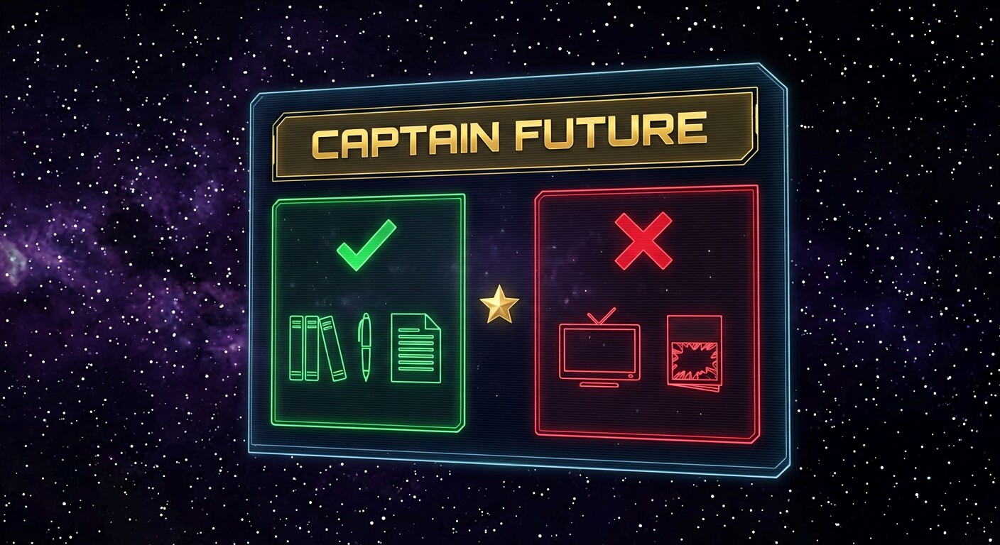

Exploitable (domaine public USA)
Textes, personnages, intrigues, univers — réutilisables librement pour vos créations, y compris commerciales, aux États-Unis.
Vérification des archives juridiques…
Centre de ressources · Domaine public
Le statut juridique de Captain Future, expliqué
Que pouvez-vous lire ? Que pouvez-vous créer ? Où trouver les textes ? Ce guide détaille le domaine public des pulps originaux, pays par pays, avec les ressources et les précautions.
⚖️ Avertissement important
Ce site est un projet de référence académique et culturelle. Les informations juridiques ci-dessous sont fournies à titre indicatif — elles ne constituent pas un conseil juridique. Le droit d'auteur varie selon les pays et évolue : consultez un juriste avant toute exploitation commerciale de Captain Future ou de tout autre personnage.
Le domaine public américain — vérifié via Stanford Copyright Renewal Database

| Élément | Statut USA | Note |
|---|---|---|
| Textes des 27 pulps (1940-1951) | Domaine public | Renouvellements non déposés → tombés dans le domaine public |
| Personnages (Curt Newton, Futuremen, Quorn…) | Domaine public | Issus des textes non renouvelés |
| Anime « Captain Future » (Toei, 1978) | Protégé | Copyright Toei — designs, musique, script |
| BD et comics récents | Protégé | DC Comics et autres éditions modernes |
| Illustrations originales des pulps (Bergey…) | À vérifier | Statut distinct des textes — cas par cas |
La règle « vie de l'auteur + 70 ans » change la donne
En Europe, une œuvre tombe dans le domaine public 70 ans après la mort de son auteur. Edmond Hamilton est mort en 1977 : ses textes entreront donc dans le domaine public européen en 2048. En attendant, ses œuvres sont protégées en Europe — y compris en France.
Les personnages furent créés par les éditeurs Mort Weisinger et Leo Margulies. Certains romans furent écrits par Joseph Samachson (mort en 1980 → domaine public européen en 2051) et Manly Wade Wellman (mort en 1986 → 2057). Le calcul européen dépend donc de chaque texte et de chaque co-auteur.
| Pays | Règle | Statut actuel | Prévu |
|---|---|---|---|
| États-Unis | Publication + renouvellement | Domaine public | Déjà en vigueur |
| France / UE | Vie + 70 ans (Hamilton †1977) | Protégé | 2048 |
| Canada | Vie + 70 ans (†1977) | Protégé | 2048 |
| Australie | Vie + 70 ans (†1977) | Protégé | 2048 |
| Japon | Vie + 70 ans (†1977) | Protégé | 2048 |
📌 À retenir pour la France
Ce site présente Captain Future comme œuvre de référence académique et culturelle, avec des citations courtes et des résumés originaux. Pour une exploitation commerciale en France avant 2048, consultez un juriste spécialisé. Les images du site sont des œuvres dérivées originales créées pour ce projet.
Où lire et télécharger les pulps originaux
Les scans des pulps originaux et les textes OCR, gratuits et complets.
✓ Fiable · Texte intégralLes lectures audio (Librivox et autres) quand elles existent.
✓ Formats variésLa référence bibliographique mondiale de Captain Future.
★ RéférenceLes éditions imprimées de collection des pulps originaux.
✓ Imprimé · CollectionLa bibliographie complète vérifiée des 27 aventures.
✓ VérifiéLa base de données de la science-fiction : éditions, couvertures, dates.
✓ FiableVous voulez créer avec Captain Future ? Voici le mode d'emploi
Textes, personnages, intrigues, univers — réutilisables librement pour vos créations, y compris commerciales, aux États-Unis.
Designs de l'anime Toei 1978 (le costume, les visages, la musique), les BD modernes, les éléments ajoutés par les adaptations.
« Œuvre de fan basée sur les pulps originaux de Captain Future (1940-1951), domaine public aux États-Unis. Aucune affinité avec les adaptations protégées. »
EFF (eff.org), Creative Commons (creativecommons.org), Public Domain Review — pour approfondir vos droits et devoirs.
📋 Checklist avant publication
La même époque, les mêmes rêves — d'autres légendes libres
Créé en 1928 par Philip Francis Nowlan. Les premiers récits sont dans le domaine public.
✓ Partiellement DPCréé par Alex Raymond en 1934. Les premiers strips sont partiellement dans le domaine public.
✓ Partiellement DPCréé en 1933 par Henry Ralston et Lester Dent (mais souvent attribué à Dent). Statut partiel.
✓ Partiellement DPNé en 1930 à la radio, héros de pulps à partir de 1931. Les premiers textes sont partiellement libres.
✓ Partiellement DPCréé par Edgar Rice Burroughs en 1912. Les premiers romans sont dans le domaine public.
✓ Premiers romans DPÉgalement de Burroughs (1912). La plupart des romans de la série sont dans le domaine public.
✓ Majoritairement DP